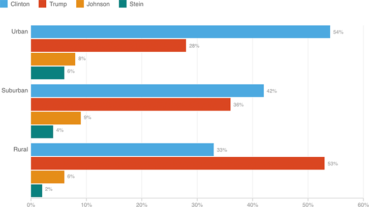

Trump Dominates Rural Areas, While Clinton Dominates Cities
In a pattern that echoes the 2012 election, rural residents overwhelmingly support Trump, while city-dwellers are by far bigger fans of Clinton.
